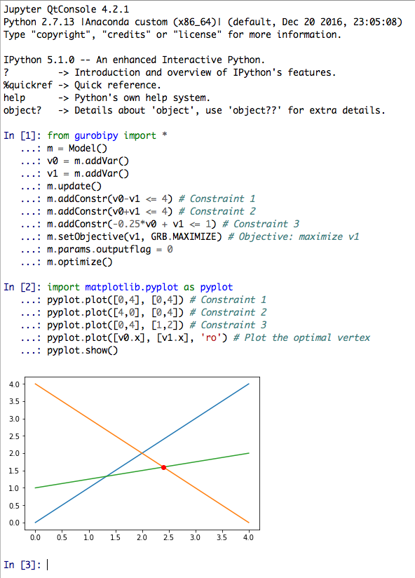
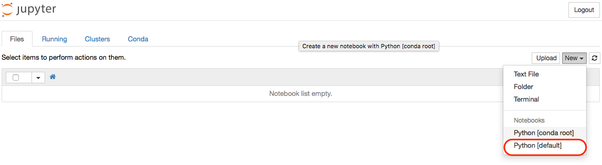
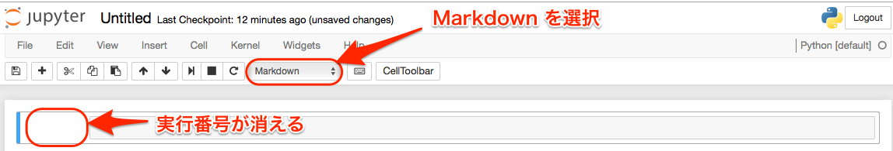
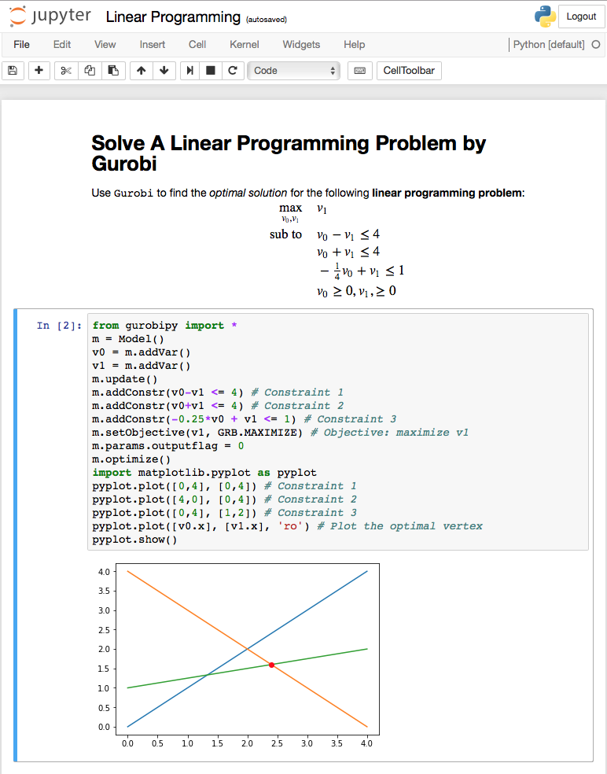
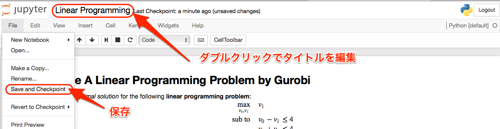

Anaconda + Gurobi による科学技術計算環境の構築
目次
1 pyenv + Anaconda + Gurobi
- Anaconda は jupyter や spyder など, Python 開発に便利なツールや科学計算に必要なライブラリがセットで入ったパッケージ. ただし, そのままインストールすると Mac OS システム自体に備わった環境を壊しかねない.
- この「汚染」を防止するために, Python の環境を管理できるツールである pyenv で Anaconda を包む.
- Gurobi は Python / C / Java などで使える最適化のためのパッケージ. homebrew/python とは整合しないが, Anaconda Python との共存は可能.
2 pyenv のインストール
homebrewを使ってpyenvをインストールするターミナルから以下を入力
brew update brew install pyenv echo '' >> ~/.bash_profile echo '# the following lines were inserted for pyenv' >> ~/.bash_profile echo 'export PYENV_ROOT="${HOME}/.pyenv"' >> ~/.bash_profile echo 'export PATH="${PYENV_ROOT}/bin:$PATH"' >> ~/.bash_profile echo 'eval "$(pyenv init -)"' >> ~/.bash_profile echo '# the above lines were inserted for pyenv' >> ~/.bash_profile exec $SHELL -l
3 Anaconda のインストール
pyenvを使って Anaconda2 系の最新バージョンを確認するターミナルから以下を入力
pyenv install -l | grep anaconda2- # 対応するバージョンが表示される anaconda2-2.4.0 anaconda2-2.4.1 anaconda2-2.5.0 anaconda2-4.0.0 anaconda2-4.1.0 anaconda2-4.1.1 anaconda2-4.2.0 # ← 最新版のバージョンを覚えておく
pyenvを使って Anaconda をインストールするターミナルから以下を入力
pyenv install anaconda2-4.2.0 # 上で確認した最新版を入力 echo 'export PATH="$PYENV_ROOT/versions/anaconda2-4.2.0/bin/:$PATH"' >> ~/.bash_profile source ~/.bash_profile
pyenv globalを使って Python 環境を Anaconda2系 に切り替えるpyenv global anaconda2-4.2.0
condaを使ってパッケージをアップデートするAnaconda と同時にインストールされる
condaという Python 用パッケージ管理ツールを使えば, 新しいモジュールをインストールしたり, 既存のモジュールをアップデートしたりできる.conda update --all
4 Gurobi のインストール
condaを使って Gurobi をインストールする
conda config --add channels http://conda.anaconda.org/gurobi conda install gurobi
4.1 Gurobi アカウントの作成とアカデミック・ライセンスの取得
4.1.1 Gurobi のアカウント・ライセンスについて
Gurobi のアカデミック・ライセンスは以下の制約の下で利用可能である：
- 学位授与機構を備えた学術機関の教員・学生もしくはスタッフのみが利用できる
- 研究もしくは教育目的にのみ利用できる
- 公認の学術機関ドメインから validate される必要がある．アカデミック・ライセンス の有効期限は12ヶ月だが，適切な教員・学生もしくはスタッフは，この手続きを繰り返 すことでライセンスを更新できる．
4.1.2 アカウント作成，ライセンスの取得および認証の方法
http://www.gurobi.com/ にアクセスし，Register をクリック

- 以下に従って必要な情報を入力:
- Account Type は「Academic」を選択
- Email は
tohoku.ac.jpで終わるアドレスを入力 - Company/University には「Tohoku University」を入力
- 登録したメールアドレスにメールが届くので, それに従ってパスワードを設定する.
- http://www.gurobi.com/ のメニューバーから Login する
http://www.gurobi.com/ のメニューバーから DOWNLOADS > Licenses > University License を選択
Free Academic License のページが表示されるので, End User License Agreement を よく読んだ後, 2箇所をチェックして Request License する.

ライセンスが発行される. ここで表示される
grbgetkey以下のコマンドを, 大学のネットワークに繋がった状態で ターミナルに入力して実行すると ユーザーディレクトリ(/Users/****)にライセンスファイルが生成され, 登録が完了する.
5 jupyter を使ってみる
5.1 jupyter とは
Python の対話型インタープリタを拡張したもの.
- jupyter console
- ハイライトや補完が可能なインタプリタを ターミナル上 で起動.
- jupyter qtconsole
- グラフをインライン表示できる高機能なインタプリタを 別ウィンドウ上 で起動.
- jupyter notebook
- ノート機能つきの高機能なインタプリタを ブラウザ上 で起動.
5.2 jupyter qtconsole を使ってみる
ターミナルから以下を入力:
jupyter qtconsole &
行末に
&をつけないと, jupyter qtconsole を閉じるまでターミナルが入力を受け付けなくなる.線形計画問題の例を入力
開いたコンソールに以下を入力.
Ctrl+RETで(実行せずに)セル内で改行.Shift+RETでセルを実行.from gurobipy import * m = Model() v0 = m.addVar() v1 = m.addVar() m.update() m.addConstr(v0-v1 <= 4) # Constraint 1 m.addConstr(v0+v1 <= 4) # Constraint 2 m.addConstr(-0.25*v0 + v1 <= 1) # Constraint 3 m.setObjective(v1, GRB.MAXIMIZE) # Objective: maximize v1 m.params.outputflag = 0 m.optimize()
続いて, 下記を入力して実行:
import matplotlib.pyplot as pyplot pyplot.plot([0,4], [0,4]) # Constraint 1 pyplot.plot([4,0], [0,4]) # Constraint 2 pyplot.plot([0,4], [1,2]) # Constraint 3 pyplot.plot([v0.x], [v1.x], 'ro') # Plot the optimal vertex pyplot.show()
こんな感じで, コマンドとグラフを同じウィンドウ上に表示させられる.

5.3 jupyter notebook を使ってみる
ターミナルから以下を入力:
mkdir ~/Downloads/jupyter_notebook pushd ~/Downloads/jupyter_notebook jupyter notebook行末に
&をつけずに起動することで, 確実に kill できる.メニューバーから New > Notebooks > Python [default] を選択

Markdown を記述
最初のセルを選択した後, メニューバーのセル種別を
Markdownに設定 そのセルに 以下を記述:
# Solve A Linear Programming Problem by Gurobi Use ```Gurobi``` to find the *optimal solution* for the following **linear programming problem**: \begin{align} \max_{v_{0}, v_{1}} \quad&v_{1}\\ \text{sub to} \quad & v_{0} - v_{1} \leq 4 \\ & v_{0} + v_{1} \leq 4 \\ & -\tfrac{1}{4} v_{0} + v_{1} \leq 1 \\ & v_{0} \geq 0, v_{1}, \geq 0 \end{align}Shift+RETで評価すると数式部分がコンパイルされる.2つ目のセルの種別が
Codeになっていることを確認した上で, 以下を記述:from gurobipy import * m = Model() v0 = m.addVar() # Unknown variable 1 v1 = m.addVar() # Unknown variable 2 m.update() # Update the model m.addConstr(v0-v1 <= 4) # Constraint 1 m.addConstr(v0+v1 <= 4) # Constraint 2 m.addConstr(-0.25*v0 + v1 <= 1) # Constraint 3 m.setObjective(v1, GRB.MAXIMIZE) # Objective: maximize v1 m.params.outputflag = 0 # Silent mode m.optimize() # Do optimize import matplotlib.pyplot as pyplot pyplot.plot([0,4], [0,4]) # Constraint 1 pyplot.plot([4,0], [0,4]) # Constraint 2 pyplot.plot([0,4], [1,2]) # Constraint 3 pyplot.plot([v0.x], [v1.x], 'ro') # The optimal solution pyplot.show()
Shift+RETでセルを評価するとグラフと最適解が表示される.
タイトルを編集し, ノートブックに名前をつけて保存する
- タイトルをダブルクリックすれば編集できる
- メニューバーから File > Save & Checkpoint を選べば, 現在のノートブックを保存できる.

- 保存したノートブックは以下の方法で再度開くことができる:
- ダッシュボードでダブルクリック
- メニューバーから File > Open
ターミナルから
jupyter notebook [タイトル].ipynb
- File > Download as > PDF via LaTeX (.pdf) とすれば, LaTeX でコンパイルした上で PDF ファイルにしてくれる. 日本語の入ったノートブックを PDF 化するには ちょっと工夫 が必要.